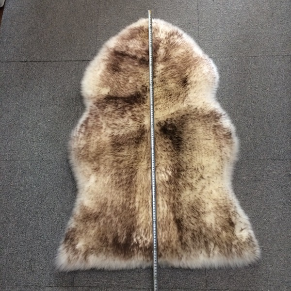

Australian Sheepskin Futon Mat | Traditional Japanese-Style Wool Mattress
$179.99
Traditional Comfort Meets Modern Quality
Experience the ancient comfort of Japanese-style sleeping with our Australian sheepskin futon mat. Premium merino wool provides natural temperature regulation - warm in winter, cool in summer. Foldable design makes it perfect for small spaces, guest rooms, and meditation corners.
Specifications
- Material: 100% Australian Merino Wool
- Thickness: 3cm (compressed)
- Size: 90cm x 200cm (Single)
- Origin: Australian Wool, Japanese Design
- Features: Foldable, Machine washable cover, Tatami compatible
Keywords
sheepskin futon, wool futon mat, Japanese futon sheepskin, foldable wool mattress, tatami room futon, meditation futon, natural futon mattress